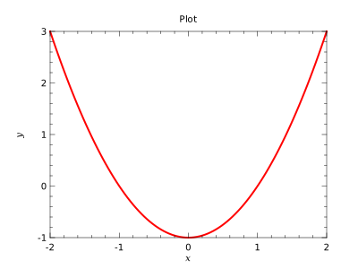

Create a basic plot

| Type | Attributes | Name | Initial | |||
|---|---|---|---|---|---|---|
| real(kind=wp), | dimension(:), allocatable | :: | x | |||
| real(kind=wp), | dimension(:), allocatable | :: | y |
program basic_prg
!! Create a basic plot
!!
!! 
use kinds_mod
use utilities_mod
use plplotlib_mod
implicit none
real(wp),dimension(:),allocatable::x,y
x = linspace(-2.0_wp,2.0_wp,101)
y = x**2-1.0_wp
call setup(device='svgqt',fileName='examples/basic-%n.svg',figSize=[400,300])
call figure()
call subplot(1,1,1)
call xylim(mixval(x),mixval(y))
call plot(x,y,lineColor='r',lineWidth=2.0_wp)
call ticks()
call labels('#fix#fn','#fiy#fn','Plot')
call show()
end program basic_prg